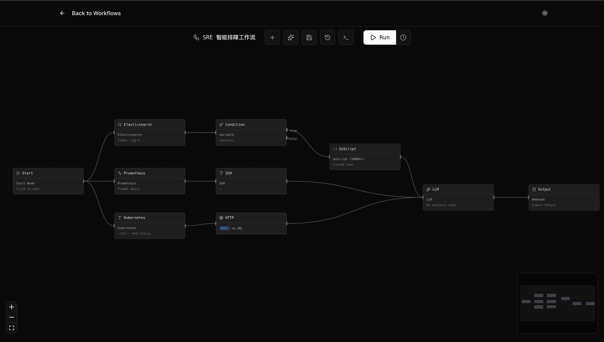
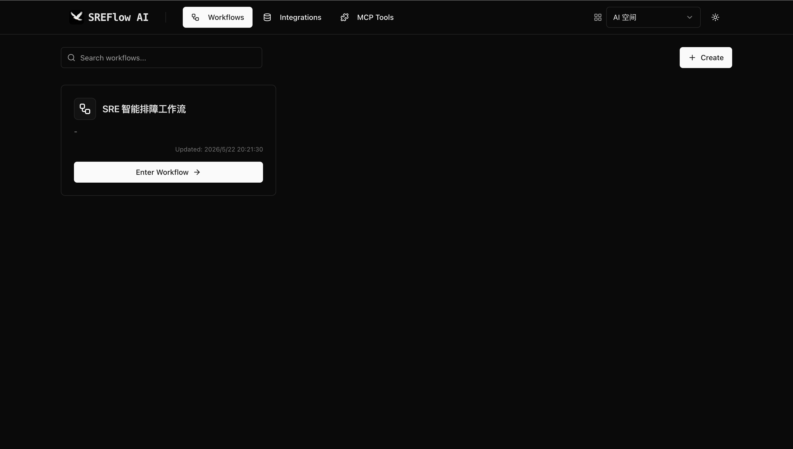
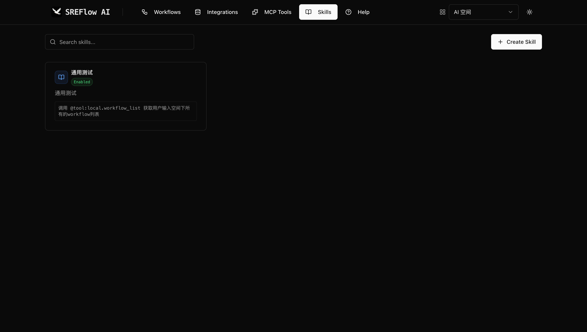
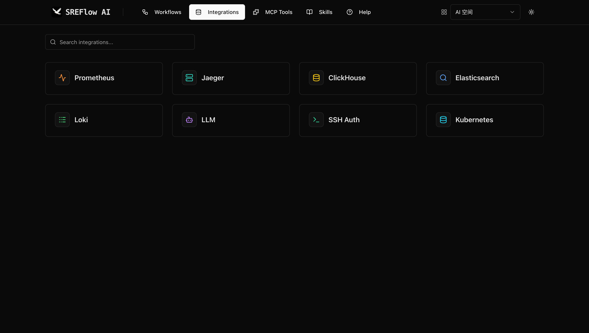
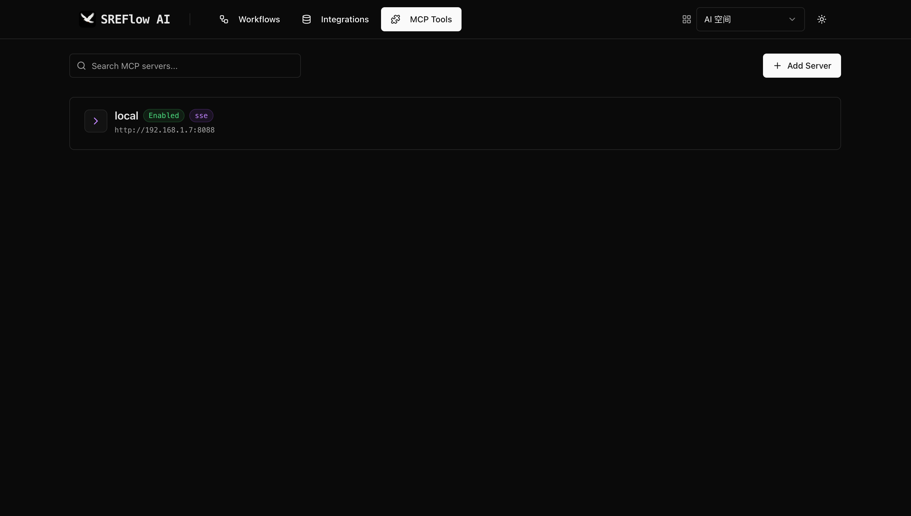

将告警响应、故障诊断与根因分析编排为可复用的 Workflow。
从第一个 Workflow 开始，让告警响应快人一步。
告警风暴、胶水脚本、黑盒推理……SRE 的日常远比想象中艰难。
日常运维仍大量依赖 Bash 脚本 + Prometheus 告警 + YAML 配置手动拼接，缺乏统一编排层。
每新增一个运维场景，就要从头写脚本、接 API、处理异常——重复造轮子、维护成本高、可复用性极差。像 n8n 这类可视化工具虽能串联简单链路，但在 SRE 场景下存在明显短板。
缺乏 SRE 领域语义，复杂度天花板低，一旦涉及多条件分支、上下文传递，维护难度急剧上升，无法胜任 AIOps 级自动化。当前市面上的 SRE Agent 普遍采用 LLM 推理 + Tool Calling 模式，但大模型并不了解你们业务的常规排障手法。
同一个告警，不同时间可能走完全不同的分析路径，无法沉淀为标准化流程；缺乏"老手直觉"，广撒网式排查而非精准定位。传统 SRE Agent 依赖大模型"凭空推理"，SREFlow 让资深经验以流程化方式被编码和执行。
黑盒 · 不可控 · 不可复现
白盒 · 可控 · 可复现
大模型驱动的 Agent 看似美好，落地时却处处是坑。
给 Agent 同样的输入，它可能给出不同的输出。更糟糕的是，它可能走不同的执行路径——这次调用了工具 A，下次调用了工具 B。
传统的单元测试在这里几乎无效。你无法断言"输入 X 必然得到输出 Y"，因为 Agent 的行为本质上是不确定的。Agent 内部到底做了什么？调了哪个 API？用了什么参数？为什么走了这条路径而不是那条？
没有可观测性工具，你就是在盲人摸象。出了问题不知道错在哪，优化也无从下手。Agent 有能力执行真实世界的操作——发邮件、转账、删数据库。如果它产生幻觉，后果不堪设想。
你需要人类在关键节点做决策。但如何在"自动化效率"和"人工审核"之间找到平衡点？每一项 SRE 痛点，SREFlow 都给出了对应的答案。
| 困境 | SREFlow 解法 | |
|---|---|---|
| 胶水脚本碎片化 | → | 标准化 Workflow 引擎，将排障、诊断、修复抽象为结构化 Flow，而非零散脚本 |
| 通用工作流缺乏 SRE 语义 | → | SRE 领域原生，内置故障诊断、根因分析、爆炸半径评估等 SRE 概念，而非通用 IF/ELSE 节点 |
| LLM Agent 不了解业务/架构 | → | 基于规范化流程排障，告警进来后按预设的架构感知路径逐步诊断，如同老手的思维链路 |
| 推理路径不可控不可复现 | → | 确定性 + 可审计，每一步排查逻辑清晰可见，路径可复现、可审计、可迭代优化 |
| 无法沉淀组织知识 | → | 流程即知识资产，排障流程本身就是团队经验的沉淀，新成员可直接复用 |
从告警触发到根因定位，SREFlow 让每一步都可编排、可观测、可复用。
基于 DAG 的层级执行模型，支持并发节点、条件分支、变量传递与重试策略，让复杂运维流程一目了然。
覆盖数据采集、AI 分析、逻辑处理与输出四大类别，开箱即用，也支持自定义扩展。
内置 Model Context Protocol 服务端，LLM Agent 可直接调用编排工作流，实现 AI 原生集成。
内置 AI Agent 节点，支持自主推理、多步决策与工具调用，在 Workflow 中嵌入智能体实现端到端自动化。
可插拔的 Skill 技能框架，将领域知识与操作封装为标准化技能单元，支持复用、组合与版本管理。
工作空间级别的资源隔离，集成与工作流按空间管理，满足多团队协作需求。
可视化定义服务拓扑关系，供 Workflow 节点引用，实现基于拓扑的智能故障定位。
Prometheus、Jaeger、Loki、Elasticsearch、ClickHouse、Kubernetes、SSH 开箱即用。
可视化构建告警响应流程，DAG 拓扑实时渲染。

从数据采集到智能分析，从逻辑判断到结果输出，覆盖 SRE 全场景。
工作空间级别的工作流管理，支持模板化复用与版本追踪。

将领域经验与操作封装为可复用的 Skill，支持版本管理与灵活组合。

Prometheus、Loki、Jaeger、Kubernetes 等主流数据源一键接入。

通过 MCP 协议，LLM Agent 可直接调用 SREFlow 的工作流能力。

从免费体验到企业买断，找到最适合你的方案。
使用 Docker 快速部署 SREFlow，只需三步即可开始使用。
在宿主机创建 ./config/ 目录，包含 config.yaml 和 license.lic 两个文件。
# SREFlow 配置文件 Server: mode: "release" port: "9002" Database: type: "sqlite" path: "data/sreflow.db" License: path: "config/license.lic"
{
"payload": "eyJob2xkZXIiOiJ0ZXN0IiwiaXNzdWVkX2F0IjoxNzc5OTgxNzM2LCJleHBpcmVzX2F0IjoxNzgyNTczNzM2fQ==",
"signature": "R2eHiX+WefipV4O/kWhATKOgQI6t1bP8Sh1bv81aey5mf2OCr45lbu35tWDuWy3iZx+Gz/hDmIY0QpO1oNsIwYZkRqNsgQSvyTGLSFn0M/P3XQb3CsymlOi7gS4yT5hZ3Dz4DTSs9VGV+Tm/j6IZdV7oyImaO3eY6uOq6y3soXSWBcpKdnxk0I5XQLz1mpbvDrbAXbnHuIuvKTGmG4hb+tKnVy12pyXIshtUDnpFvgMOwAx4jdM9x7Erydlz7rKWZaM82jNfcushYgpf//TjwiNWY9IUn2fxaXUadT25jucMKTR+KtAvAyP6huWThIrfNwE+jCCQwvDceGvdIwiXsg==",
"public_key": "LS0tLS1CRUdJTiBQVUJMSUMgS0VZLS0tLS0KTUlJQklqQU5CZ2txaGtpRzl3MEJBUUVGQUFPQ0FROEFNSUlCQ2dLQ0FRRUFreGM5ZHU4eldIbmFsSm1VSVU5TAp2bk8rczVuVmp4RVY2M3RSRE5jWE5ldEJyc2NwQmphTUJnNjRBYUVsaGxyd0cvY3JDZEhnOEwxRzNFaDNSVHl0CjEzVkVabWhialYzY3pKRnFsZDcxU3hCSDFQa0RKUmF4YzhRVUMwS2NTUmtwRjJsSE1ZMDRud3VXRG5Ua256SUcKd25YcXUwN3FyaDVkbWRUOWU3SFFmMEVtN2ZJcXZVTFRhdkVWRDlZQW1pKzlKVjF1UXU1aDdQdkpXZXpxbzRaNwpFVkhZSVR6clYvUUhsUnNCbWZqK3pDbE12S01uSVM5N0Y4dDFGenIwNjVDbW9ia1BjYXY5WEhyL3p1VjNqYTA3Cm05KzFLSHV5MzlrRjdiRzduaytJNlBXaTNpbkVwa3BxMTdUSStNT0VONTBCS2RKdHc3aGlOYVUwMWN5QzIrWG8KdVFJREFRQUIKLS0tLS1FTkQgUFVCTElDIEtFWS0tLS0tCg=="
}
运行以下命令，启动 SREFlow 容器服务。
docker run -itd --name sreflow \ -p 8080:8080 \ -v ./config/:/app/config/ \ docker.1ms.run/cairry/sreflow:v1.0.8
启动完成后，访问 http://localhost:8080 即可使用 SREFlow。
从第一个 Workflow 开始，让告警响应快人一步。